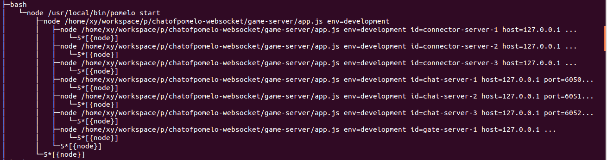

When developing applications using pomelo, we have concerned more on how to fill code into the framework and configure the framework, and less on how to drive the framework. This chapter will tell you about framework execution flow.
When we start an application, we execute command "pomelo start" in game-server directory, then you can see a lot of logs printed, and the server cluster is started. But we do not know how the framework has it done. In this section, it is a try to tell you how to drive an application based on pomelo framework.
First, see the figure below:

This figure is part of a process tree snapshot after the example chat started on local host that uses Ubuntu 12.04 by command:
$ pstree -au
It can be seen from the figure, the process "pomelo start" will spawn a child process, which execs "node app.js env = development", and then the child process will spawn a series of child processes, all the child processes exec same orignal file "app.js", but with more parameters, such as id, serverType, port and so on.
Well, now we can make a simple explanation, the child process that "pomelo start" process directly spawns is the master server process, and all the child processes spawned by master server process are the application server process, the command they exec is similar to:
$ node <BasePath>/app.js env = development id = chat-server-1 ...
Of course, where all the processes are on same local host, so there is parent-child process relationship among them, and the master server process is the parent process for other application servers. If the servers are spawned in distributed environment, that means different hosts, pomelo will launch these servers by ssh, in that case, there will be not parent-child process relationship between the master server process and the application processes which spawned by the master server process.
Let us analyze the procedure of pomelo launching with pomelo.createApp method first.
First, we exec "pomelo start", pomelo command-line tool will check start parameters, such as --daemon for daemon startup, the environment it use, which may be production, development or others that specified by users. Here, we just "pomelo start" without other parameters, then the command-line tool will add a default env to its parameters, namely "env = develpment", then it spawn a node.js process by exec:
$ node <BasePath>/app.js env=development
In this way, "pomelo start" spawns a node.js process with startup file "app.js".
Application Initialization
Now we analyze app.js's execution :

As shown in the sequence diagram above :
- Call Pomelo.createApp() to create a Application instance;
- Pomelo.createApp call will call app.init method to complete the initialization of app;
- App uses defaultConfiguration provided by appUtil to complete its initializational configuration;
In the call to AppUtil.defaultConfiguration, it will call some initialization methods, these methods include setEnv, loadMaster, loadServers, parseArgs, configLogger. Here setEnv method will set the current env to development for default as we did not provide it, loadMaster will load the master server's configuration information, such as where it should spawn on and which port it should listen for managing the server cluster, loadServers will load all the static application server configuration information. ParseArgs is a very critical method, since we only specify startup parameters env without other parameters specified, pomelo will spawn it as master server. Thus, the current process will use the master's configuration information that includes its own serverId, serverType and other parameters, that is why the master server just exec "node app.js" without other parameters seen from the process tree figure. If it is a application server, pomelo will add required parameters such as serverId, serverType and so on to the exec command. All the parameters will be handled in parseArgs method to determine the server's id, type, and other information.
After finishing the above operations, app turns into INITED state, while pomelo.createApp returned.
After pomelo.createApp() returns an application instance "app", in app.js, we can do some configuration to app, such as calling app.set to set options for builtin components, app.route to configure a routing policy, etc..
Master server startup
Now we turn to master server.
After all the above operations done, it will enter into the app.start (). When app.start called, it will first load the default builtin component, for master server, its default builtin components are master component and monitor component. Next, we will analyze the master component's responsibility in startup:

As shown in the sequence diagram above:
First app.start() will load the default builtin components, for master server, master component will be loaded. As master component is exported by factory function, it will create master component using its factory function, In master component's creation procedure, it creates MasterConsole, MasterConsole creates MasterAgent, MasterAgent creates a server-side socket, that is used to listen and accept monitoring and management requests from the application servers.
When finished to load all the components, including Master component , it will start all the components by call the start callback defined in component's implementation. For master server, it will start the master and monitor components. Master component will register default admin modules, which calls app.registerAdmin. BTW, if users customized its own admin-modules, it should call app.registerAdmin to register it to admin framework before app.start call.
After all the default admin-module are registered to app, master component starts MasterConsoleService. While starting MasterConsoleService, MasterConsoleService will obtain all the registered admin-module from app, then add them to its own admin-module repository, which is a map using ModuleId as key. When request comes later, the corresponding callback within admin-module in MasterConsoleService's admin-module repository will be called directly.
Then, MasterAgent will listen on configured port, at this time , Master component would be able to accept the request for monitoring and management.
After starting listening on configured port, the next step is to enable all of the admin-module. Based on option type and interval an admin-module provides, it can be determined whether the admin-module callback trigger mode is by master to pull or by the monitor to report periodically, or non-periodically but triggered by other events. If you are using a periodical trigger, this step will schedule it by pomelo-schedule, otherwise it does nothing.
Next, it will start all the admin-module by calling the callback "start" defined in admin-module's implementation if possible. Until now, master component has started to listen requests, stored all the callback provided by admin-modules that should be called for requests in its own repository, scheduled all the admin-modules which uses periodic trigger.
It's time to start all application server. When the master component completed all its own initialization, it will launch the server cluster by delegating Starter to do it.
Note: Because an application server, will report its status to the master once started, so master component must be started and ready to accept requests for monitoring and management before the application servers started, so that is why master component complete its own initialization operations before going to start the application servers.
-
As we know, when after master server initialization, master server will obtain the information configured for all application servers that should be launched. The information for each server includes its host, port, serverType, serverId and so on. When Starter launches application servers, it will check whether the server process should be launched locally or remotely, if former, it will spawn application server as its child process, otherwise it will spawn the remote server process by ssh. The application server launching will use more specified parameters that are used to describe the application server, here is an example from demo chat while launching an application server it will exec:
node /app.js env=development id=chat-server-1 host=127.0.0.1 port=6050 serverType=chat
Thereafter, all the application servers will be launched.
- After "start" method call for master component, due to the master component does not define "afterStart" method, so it is complete to launch the master server process at this time. From now, master server can listen and accept requests from monitor of other application servers and client that is used to manage the server cluster.
Application Server Startup
For application servers, they are similar to master server, it will execute app.js, create app, load configuration information, and do other initialization operations. The only difference between application server and master server in initialization stage is, master server execute app.js with no specific server parameters, that makes pomelo treat it as master server while the application server execute app.js with specific server parameters that describe what the server is. For the master server, it loads master component, but for application server, the components it loads depends on the application server's configuration.
After initializing app instance, the code to configure app in app.js will be executed, including calls such as app.route, app.set and so on.
After executing user-configured code, app.start will be called, in which pomelo framework will load different builtin components for various type of server by default. For pomelo, each server can be treated as a container of its components loaded and used to manage their lifecycles.There are "start", "afterStart" and "stop" optional callbacks defined for each component, these callbacks are used lifecycle management by framework, the calling sequence is shown as follows:

Pomelo framework always call the "start" callback of all components one by one in the order of how they are loaded, and then "afterStart". The reason why providing "afterStart" callback is there may be components some of whose initializational operations depend on others', then you can move these operations to "afterStart" for delay its execution. In addition, there may be some initialization operations that need to be executed after global work being done, you can also move them to "afterStart" callback.
Different components can provide different functionalities. All functionalities of an application server are provided by its loaded components.
After "afterStart" was called for all the components, the application server complete its startup. At this time, the application server has ability to handle incoming requets. The server cluster is launched completely.
Server Cluster Shutdown
When we execute "pomelo start" to launch the server cluster, all servers will run its own event loop, accepting the incoming request event or its timer event, and then invoking corresponding callback if an event is emitted.
When we want to shut down the server cluster, we can use the command-line tool to exec pomelo stop to shut down gracefully,. In fact, the command-line tool acts as a client role for pomelo management framework, it uses the builtin admin-module "console", it will connect and register to master server and send a stop request, then after receiving, the callback for master server will notify it to all the application servers. the callback for that request in application server will invoke app.stop, as the figure described above, it will invoke "stop" callback for its loaded components according to the reverse loaded order.After callback "stop" invoked completely for all the components, the application server will be shut down. Master server will stop its components too. Finally, the server cluster is shut down.
Summary
In this section, we explain how pomelo application servers launch and shut down. A pomelo application server can actually be treated as a container for its loaded components and manage lifecycle for these components, which provide all its functionalities. When implementing a component, The exported is often a factory function other than a object. While loading it, app create the corresponding component using its factory function if the exported is a factory function. The app as an instance of Application, does not perform any game-related logic, it is only to be used as a framework-driven entrance and a global context.